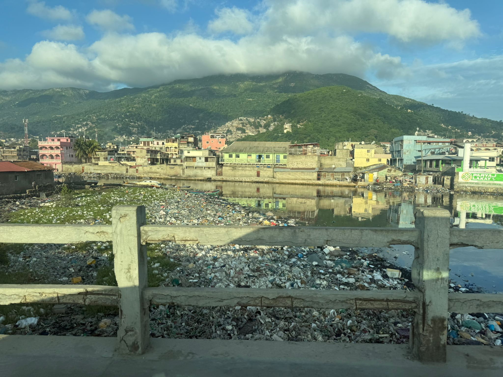
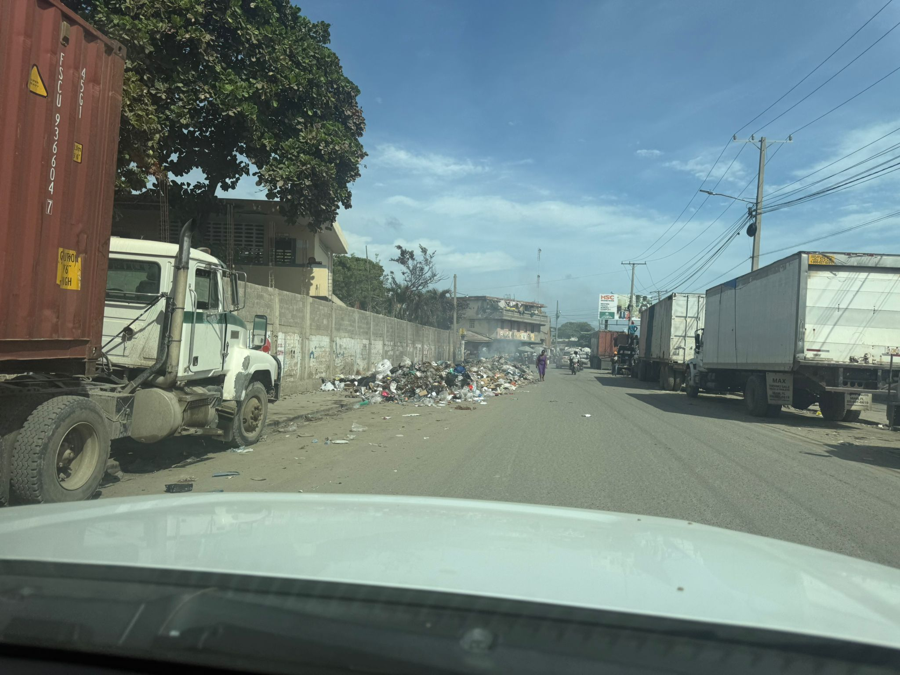
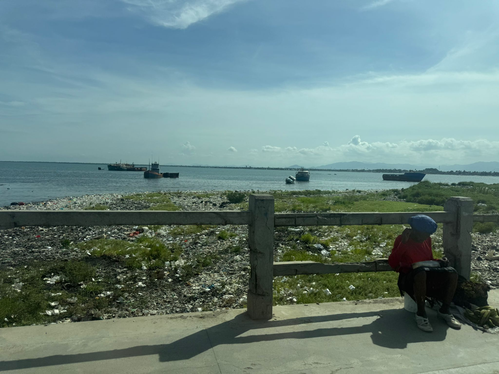
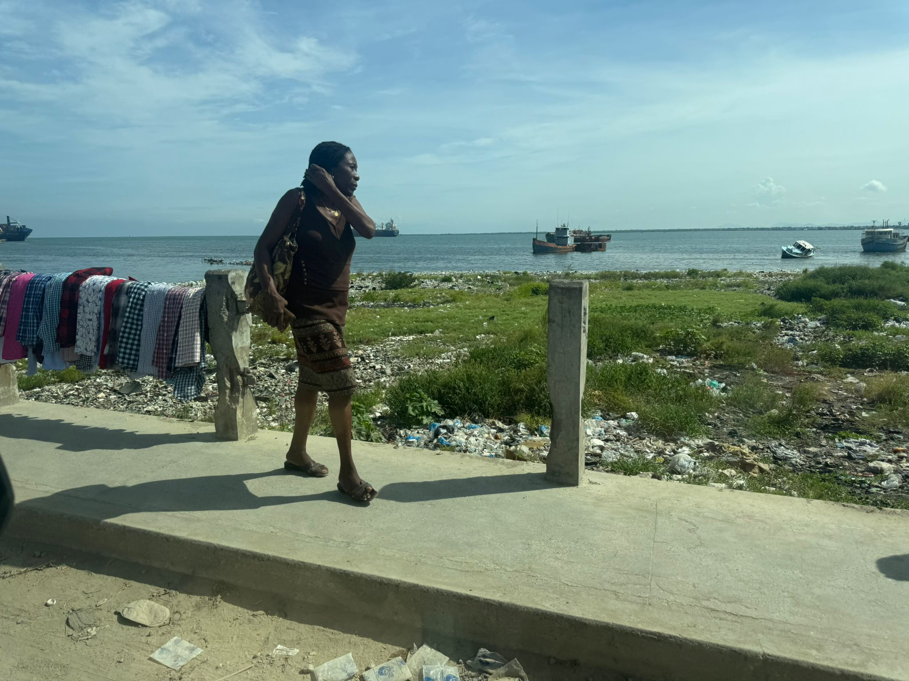
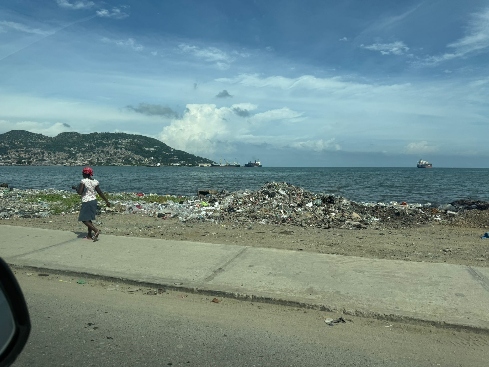
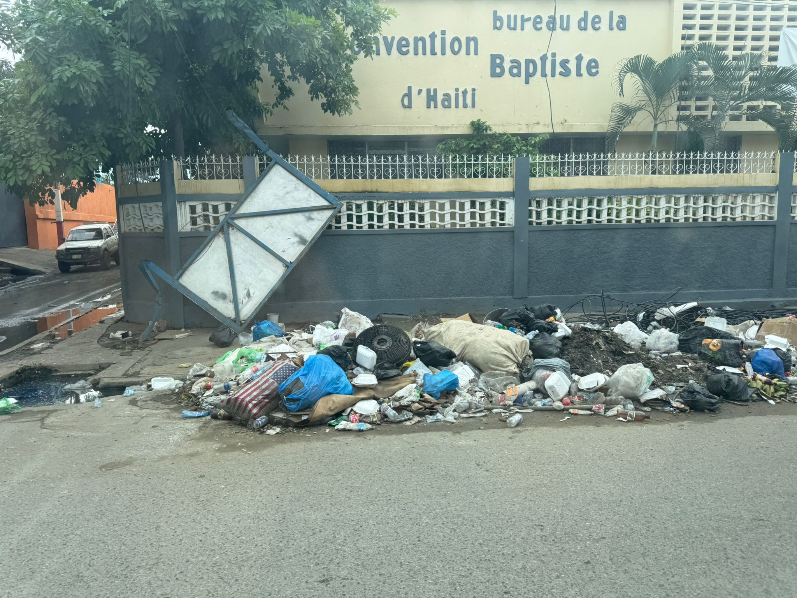
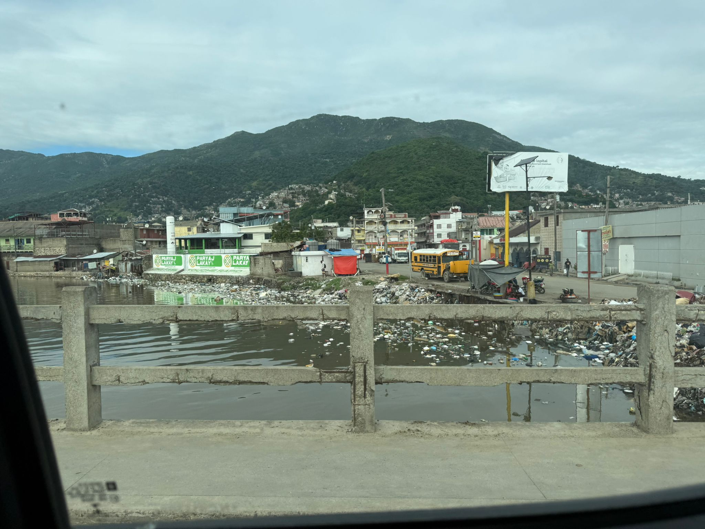
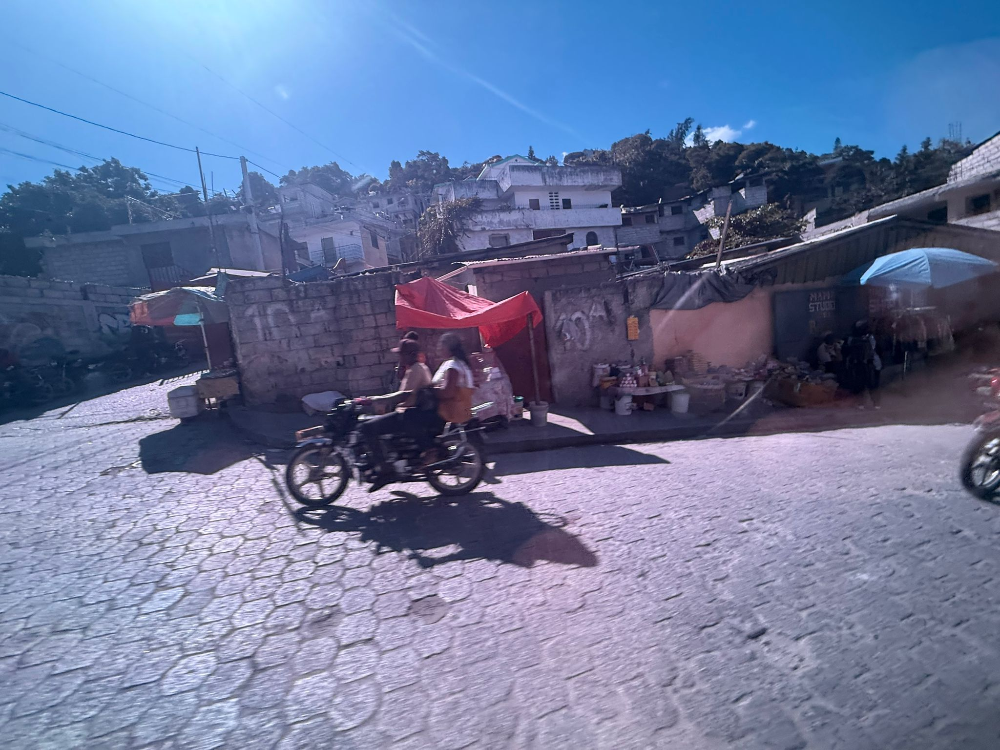

ONG - Familias sin Fronteras por la Infancia
Haiti atraviesa una de las crisis humanitarias, sociales y de gobernanza más profundas de su historia reciente. Este informe fotográfico documenta escenas observadas en Cabo Haitiano y Puerto Príncipe y áreas adyacentes durante 2025.

Un canal desbordado de basura atraviesa la ciudad mientras, al fondo, las montañas recuerdan la belleza natural que Haití aún conserva.
La acumulación de residuos representa riesgos sanitarios como enfermedades y contaminación del agua.

Montones de basura arden entre camiones inmóviles.
Los bloqueos viales y la quema de residuos paralizan la movilidad y la asistencia humanitaria.

Una mujer sentada en el suelo y detras un mar que trae desechos; barcos oxidados descansan inmóviles.
La degradación costera afecta la pesca y el comercio local.

Una mujer camina junto a la costa con ropa tendida en la barandilla.
La falta de infraestructuras obliga a usar espacios públicos para tareas domésticas.

Una mujer con pañuelo rojo camina entre montones de basura.
Los caminos costeros se convierten en vertederos informales.

Montones de residuos se acumulan sobre el asfalto.
La deficiente gestión de residuos transforma vías públicas en focos de contaminación.

Un asentamiento precario se aferra a la ladera.
Los asentamientos informales concentran vulnerabilidad extrema.

Las colinas se cubren de viviendas sin control.
El crecimiento desordenado refleja pobreza y falta de políticas públicas.